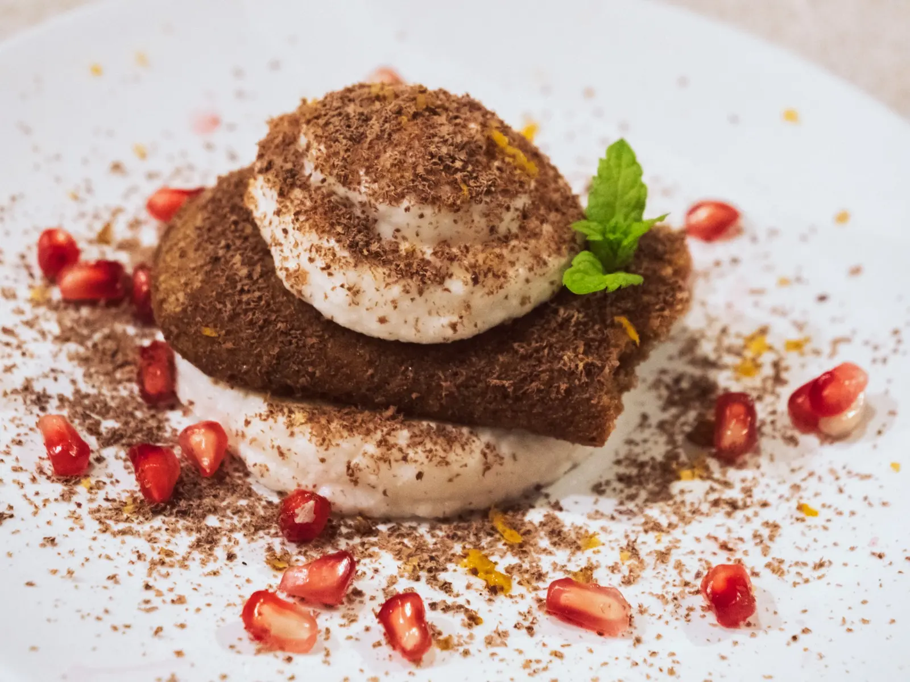

Private Chef
Imagine having a dedicated chef arrive at your home, ready to prepare and serve dishes that tell the story of Puglia’s rich culinary history. With Chef Claudio’s private chef service, you’ll embark on a genuine gastronomic journey, enjoying seasonal menus that can be personalised to your liking.
Every dish is crafted using fresh, locally-sourced ingredients, allowing you to experience the true essence of Puglian cuisine in the comfort of your own home.

Cooking Class
Discover the art of making handmade Puglian pasta, fragrant taralli, rustic focaccia, and traditional pizza with our engaging cooking classes. Using the finest local ingredients, we offer an interactive experience that allows you to delve into Puglian culinary traditions.
Perfect for families, friends, or groups of food enthusiasts, our classes cater to all skill levels, ensuring that everyone can recreate the most iconic dishes of our region in their own kitchen.
Let food be the heart of your gathering and take home more than just recipes—carry with you the cherished memories of shared laughter, the joy of creating something new, and a deeper appreciation for the rich traditions of Puglian cuisine.

Small Weddings & Event Catering
For intimate weddings or small celebrations, Chef Claudio and his team bring the authentic flavours of Puglia directly to your event. From creating bespoke menus to delivering fresh, ready-to-enjoy dishes, we offer a personalised catering service that’s perfect for any special occasion.
Whether it’s a wedding, anniversary, or private gathering, we ensure that every dish reflects our love for Puglian tradition and the quality of our local ingredients. Celebrate your special moments with the unmistakable flavours of Puglia.
